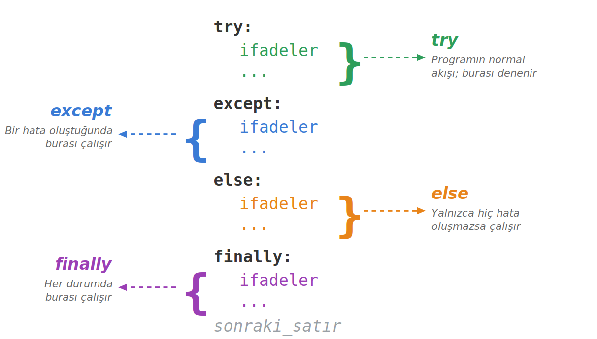

Python'da Hata Yönetimi
Bir program çalışırken beklenmedik durumlarla karşılaşır: kullanıcı yanlış veri girer, dosya bulunamaz, bir sayı sıfıra bölünür. Bu sayfa, programın çökmeden bu durumları yönetmesini sağlayan try, except, else, finally ve raise yapılarını anlatır.
Bu sayfada
1Hata yönetimi neden vardır?
Bir program çalışırken her şeyin yolunda gideceğini varsaymak iyimser ama gerçekçi olmayan bir yaklaşımdır. Kullanıcı sayı yerine harf girer, açılmak istenen dosya silinmiştir ya da bir sayı sıfıra bölünür. Bu durumların hepsi çalışma zamanında ortaya çıkar ve hiçbir önlem alınmamışsa program çöker, yani aniden durur ve geri kalan satırlar hiç çalışmaz.
Amaç hataları yok etmek değildir; amaç, bir hata oluştuğunda programın ne yapacağına bizim karar verebilmemizdir. Bunu üç şey için kullanırız: programın çökmesini engellemek, kullanıcıya anlamlı geri bildirim vermek ve riskli işlemleri güvenli kılmak.
1.1 İki tür hata
| Tür | Ne zaman oluşur | Yakalanabilir mi? | Örnek |
|---|---|---|---|
| Söz Dizimi Hatası (SyntaxError) | Kod çalışmadan önce, yazım kurallarına aykırı kod yazıldığında | ✕ Hayır, kodu düzeltmek gerekir | print("merhaba" |
| Çalışma Zamanı Hatası (Exception) | Kod çalışırken, beklenmedik bir durumla karşılaşıldığında | ✓ Evet, try/except ile | 10 / 0 |
Cambaz düşmeyi planlamaz ama düşme ihtimaline karşı ağ kurar. try ipin üzerinde yürümek, except alttaki güvenlik ağı, finally ise gösteri sonunda ağın her hâlükârda toplanmasıdır.
2Önlem alınmazsa ne olur?
Bir hatayı yakalamadığımızda Python o hatayı yukarı doğru fırlatır ve program çöker. Çöktüğü andan sonraki hiçbir satır çalışmaz.
print("Program başladı")
sayi = int(input("Bir sayı giriniz: ")) # Kullanıcı "abc" girerse...
print("Girdiğiniz sayı:", sayi) # buraya hiç gelinmez
print("Program bitti") # bu da çalışmaz
Program başladı
Bir sayı giriniz: abc
Traceback (most recent call last):
...
ValueError: invalid literal for int() with base 10: 'abc'
"Program bitti" satırı hiç çalışmadı. Program ortasında, kontrolsüz bir şekilde durdu. Hata yönetiminin amacı bu kontrolsüz duruşu önlemektir.
2.1 Sık karşılaşılan hata türleri
| Hata tipi | Ne zaman oluşur | Örnek |
|---|---|---|
ValueError | Tip doğru ama değer uygunsuz | int("abc") |
TypeError | İşlem yanlış tiplerle yapılır | "2" + 2 |
ZeroDivisionError | Bir sayı sıfıra bölünür | 10 / 0 |
IndexError | Listede olmayan indekse erişilir | [1,2,3][5] |
KeyError | Sözlükte olmayan anahtar istenir | {"a":1}["b"] |
FileNotFoundError | Var olmayan bir dosya açılır | open("yok.txt") |
Hata mesajının son satırı her zaman hata tipiyle başlar. ValueError: ... satırını gördüğünüzde, yakalamanız gereken hata ValueError'dır.
3try ve except yapısı
Başarısız olma ihtimali olan kodu try bloğuna, hata oluştuğunda ne yapılacağını ise except bloğuna yazarız. try içinde hata oluşmazsa except hiç çalışmaz; bir hata oluşursa kontrol doğrudan except bloğuna geçer.
try:
sayi = int(input("Bir sayı giriniz: "))
print("Girdiğiniz sayı:", sayi)
except:
print("Geçersiz giriş! Lütfen bir sayı giriniz.")
print("Program devam ediyor...") # artık her durumda çalışır
Geçersiz giriş! Lütfen bir sayı giriniz. Program devam ediyor...
Artık program hangi durumda olursa olsun çökmüyor, son satıra kadar çalışmaya devam ediyor.
4Belirli hataları yakalamak
Boş except: her türlü hatayı yakalar; bu, beklemediğimiz bir hatayı da yutar ve gerçek sorunu gizler. except yanına hata tipini yazarak yalnızca o hatayı yakalarız.
try:
sayi = int(input("Bir sayı giriniz: "))
sonuc = 100 / sayi
print("Sonuç:", sonuc)
except ValueError:
print("Lütfen harf değil, sayı giriniz.")
except ZeroDivisionError:
print("Bir sayıyı sıfıra bölemezsiniz.")
| Kullanıcı girişi | Oluşan hata | Çalışan blok | Ekran |
|---|---|---|---|
abc | ValueError | birinci | Lütfen harf değil, sayı giriniz. |
0 | ZeroDivisionError | ikinci | Bir sayıyı sıfıra bölemezsiniz. |
5 | Yok | hiçbiri | Sonuç: 20.0 |
except bloklarında en özel hatayı en üste, en genel hatayı (Exception) en alta yazın. Aksi hâlde alttaki özel bloklar ölü kod olur.
5Hata nesnesini yakalamak: as
Bir hata oluştuğunda Python, o hatayla ilgili bilgileri içeren bir hata nesnesi üretir. Bu nesneyi as ile bir değişkene alıp hata mesajını okuyabiliriz.
try:
sayi = int("abc")
except ValueError as hata:
print("Bir hata oluştu:", hata)
print("Hata tipi:", type(hata))
Bir hata oluştu: invalid literal for int() with base 10: 'abc' Hata tipi: <class 'ValueError'>
6else ve finally blokları
else yalnızca try içinde hiç hata oluşmazsa çalışır. finally ise hata oluşsa da oluşmasa da her durumda çalışır; genellikle dosya kapatma gibi temizlik işleri için kullanılır.

try:
print("1) try: riskli işlem deneniyor")
sayi = int("123")
except ValueError:
print("2) except: yalnızca hata olursa çalışır")
else:
print("3) else: yalnızca hata OLMAZSA çalışır")
finally:
print("4) finally: HER durumda çalışır")
1) try: riskli işlem deneniyor 3) else: yalnızca hata OLMAZSA çalışır 4) finally: HER durumda çalışır
| Blok | Ne zaman çalışır? |
|---|---|
try | Her zaman başlar (riskli kod buraya yazılır) |
except | Yalnızca hata oluşursa |
else | Yalnızca hata oluşmazsa |
finally | Her durumda (hata olsa da olmasa da) |
7raise ile hata fırlatmak
Şimdiye kadar hataları yakaladık. Bazen ise hatayı bilerek biz oluşturmak isteriz, örneğin bir fonksiyona negatif yaş gibi mantıksız bir değer geldiğinde. Bunun için raise kullanılır.
def yas_kontrol(yas):
if yas < 0:
raise ValueError("Yaş negatif olamaz!")
print("Yaş geçerli:", yas)
yas_kontrol(25) # Yaş geçerli: 25
yas_kontrol(-3) # ValueError: Yaş negatif olamaz!
raise ifadesi de tıpkı return gibi fonksiyonu anında durdurur; raise'den sonraki satırlar çalışmaz.
8Hangi yapıyı ne zaman kullanmalı?
| Durum | Önerilen yapı |
|---|---|
| Bir kodun hata verme ihtimali var, çökmesini istemiyorum | try / except |
| Her hataya farklı mesaj vermek istiyorum | Birden çok except <HataTipi> |
| Hatanın açıklamasını okumak / kaydetmek istiyorum | except ... as hata |
| Riskli işlem başarılı olursa devamında bir şey yapacağım | else bloğu |
| Hata olsa da olmasa da çalışacak kod var | finally bloğu |
| Uygunsuz değer gelince hata oluşturmak istiyorum | raise |
| Hata bir yazım hatası (SyntaxError) | try/except değil, kodu düzelt |
9Kendin yaz
Aşağıdaki görevleri önce kendiniz yazmaya çalışın; takıldığınızda çözümü açın. Görevler kolaydan zora doğru sıralanmıştır.
Görev 1: Güvenli bölme
İki sayıyı bölen guvenli_bol(a, b) fonksiyonunu yazın. Bölen sıfırsa program çökmesin; ZeroDivisionError yakalanıp "Sıfıra bölünemez" metni döndürülsün. Fonksiyonu (10, 4) ve (10, 0) ile çağırıp sonuçları yazdırın.
2.5 Sıfıra bölünemez
Çözümü göster
def guvenli_bol(a, b):
try:
return a / b
except ZeroDivisionError:
return "Sıfıra bölünemez"
print(guvenli_bol(10, 4))
print(guvenli_bol(10, 0))
Görev 2: Hatalı kayıtları ayıklama
Bir formdan gelen notlar metin olarak ["45", "abc", "80", "", "92"] listesinde duruyor. Sayıya çevrilebilenleri toplayın; çevrilemeyenler için ValueError yakalayıp ekrana Geçersiz: 'abc' gibi bir satır yazın. En sonda geçerli not sayısını ve toplamı yazdırın.
Geçersiz: 'abc' Geçersiz: '' Geçerli not sayısı: 3 Toplam: 217
Çözümü göster
notlar = ["45", "abc", "80", "", "92"]
toplam = 0
adet = 0
for metin in notlar:
try:
toplam += int(metin)
adet += 1
except ValueError:
print(f"Geçersiz: '{metin}'")
print("Geçerli not sayısı:", adet)
print("Toplam:", toplam)
Görev 3: Yaş doğrulama
Gelen metni yaşa çeviren yas_al(metin) fonksiyonunu yazın. Metin sayıya çevrilemezse int() hatası kendiliğinden oluşur; sayı 0 ile 120 arasında değilse raise ValueError("Yaş 0 ile 120 arasında olmalı") ile hatayı siz fırlatın. Fonksiyonu "25", "yirmi" ve "150" ile try/except ValueError as hata içinde çağırıp sonucu ya da hata mesajını yazdırın. Projede kullanıcı girişlerini bu kalıpla denetleyebilirsiniz.
Kabul edildi: 25 Hata: invalid literal for int() with base 10: 'yirmi' Hata: Yaş 0 ile 120 arasında olmalı
Çözümü göster
def yas_al(metin):
yas = int(metin)
if yas < 0 or yas > 120:
raise ValueError("Yaş 0 ile 120 arasında olmalı")
return yas
for metin in ["25", "yirmi", "150"]:
try:
print("Kabul edildi:", yas_al(metin))
except ValueError as hata:
print("Hata:", hata)
10Konu sonu testi
Aşağıdaki beş soruyu kendiniz çözün. Her sorunun altındaki Cevabı göster satırına tıklayınca doğru cevap ve açıklaması açılır.
-
Aşağıdaki kodun çıktısı nedir?
soru1.pytry: print("A") sonuc = 10 / 0 print("B") except ZeroDivisionError: print("C")- A)
AveB - B)
AveC - C)
A,BveC - D) Yalnızca
C - E) Hata verir
Cevabı göster
BAyazılır, sonra10 / 0hata verir →print("B")atlanır,exceptçalışıpCyazar.Bhiç çalışmaz. - A)
-
int("merhaba")ifadesi hangi hatayı oluşturur?- A)
TypeError - B)
ZeroDivisionError - C)
NameError - D)
SyntaxError - E)
ValueError
Cevabı göster
E"merhaba"bir string olarak doğru tiptedir ama sayıya çevrilemeyecek bir değerdir; bu yüzdenValueErroroluşur. - A)
-
Aşağıdaki kodun çıktısı nedir?
soru3.pytry: sayi = int("50") except ValueError: print("Hata") else: print("Başarılı") finally: print("Bitti")- A)
BaşarılıveBitti - B)
Hata - C)
Başarılı - D)
HataveBitti - E) Yalnızca
Bitti
Cevabı göster
Aint("50")hatasız çalışır →exceptatlanır,else"Başarılı" yazar, ardındanfinally"Bitti" yazar. - A)
-
finallybloğu ile ilgili hangisi doğrudur?- A) Yalnızca hata oluşursa çalışır
- B) Yalnızca hata oluşmazsa çalışır
- C) Yalnızca
exceptbloğu yoksa çalışır - D) Hata oluşsa da oluşmasa da her durumda çalışır
- E) Hiçbir zaman çalışmaz
Cevabı göster
Dfinallybloğunun tanımı: hata olsun ya da olmasın her durumda çalışır. -
Aşağıdaki kodun çıktısı nedir?
soru5.pydef kontrol(sayi): if sayi < 0: raise ValueError("Negatif!") return "Pozitif" try: print(kontrol(-5)) except ValueError as e: print("Yakalandı:", e)- A)
Pozitif - B)
Negatif! - C)
Yakalandı: Negatif! - D)
ValueError - E) Hiçbir şey yazmaz
Cevabı göster
Ckontrol(-5)çağrısıraise ValueError("Negatif!")ile hata fırlatır; bu hataexcept'te yakalanır ve mesajıyla yazdırılır. - A)
Hata bir araçtır, düşman değildir. Python'un fırlattığı hata mesajları sorunun ne olduğunu ve nerede oluştuğunu söyler. Mesajı okumak, çözümün ilk adımıdır.
11Kendi başına dene
Aşağıdaki soruları kendi başınıza çözün; çözümleri verilmemiştir.
- İçinde sırasıyla
"elma","muz","çilek","kavun"bulunan bir meyve listesi düşünün (numaralar 0, 1, 2, 3). Kullanıcıya "Kaç numaralı meyveyi istersiniz?" diye sorunuz; geçerli bir numara girilirse o meyveyi yazdırınız, listede olmayan bir numara (örneğin 5) girilirse program çökmesin ve "O numarada bir meyve yok." yazdırınız. - Bir dosya işlemini taklit eden bir program yazınız. Önce ekrana "Dosya açıldı." yazsın; sonra içeride bilinçli bir hata oluşsun (örneğin 10'u 0'a bölmek); hata oluşsa da oluşmasa da en sonunda mutlaka "Dosya kapatıldı." yazdırılsın. (
finally.) - Bir sayı listesinin ortalamasını bulan bir program yazınız. İki özel duruma hazırlıklı olsun: liste boşsa "Boş listenin ortalaması alınamaz." mesajını versin; liste içinde sayı olmayan bir eleman (örneğin bir kelime) varsa çökmesin ve "Listede sadece sayılar olmalı." uyarısını versin. Programı
[10, 20, 30],[]ve[10, "armut", 30]listeleriyle deneyiniz.
12İleri okuma
Konuyu Python'un resmî belgelerinden de okuyabilirsiniz:
Dosya İşlemleri (4-5. hafta). Dosya açarken FileNotFoundError ve finally ile kapatma burada tekrar karşınıza çıkar.